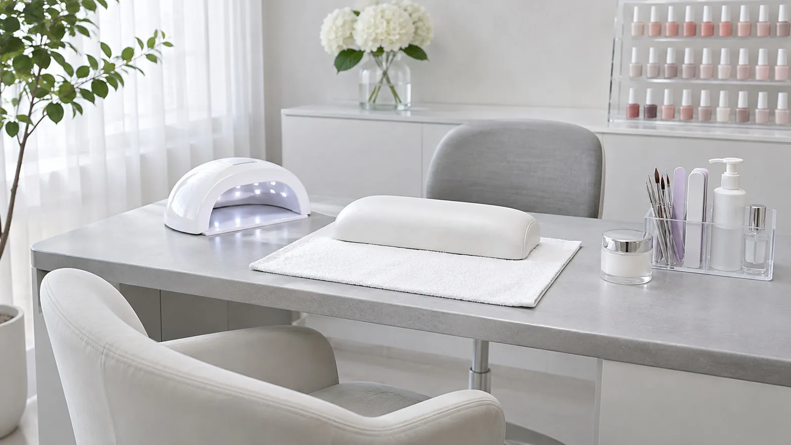
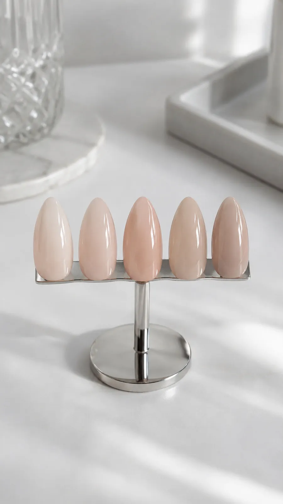
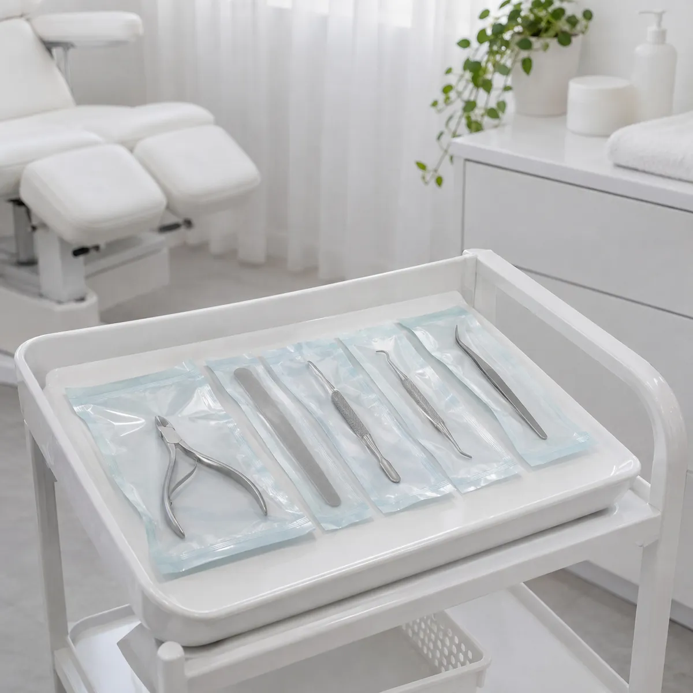
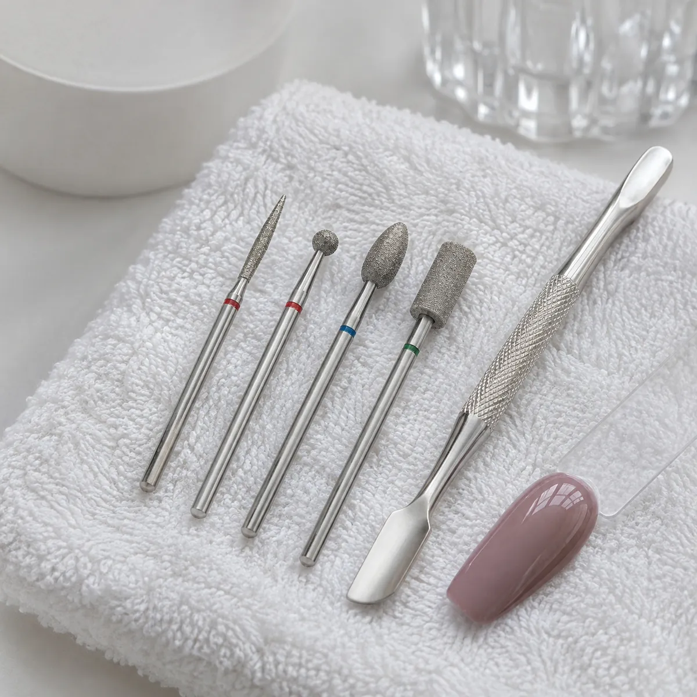
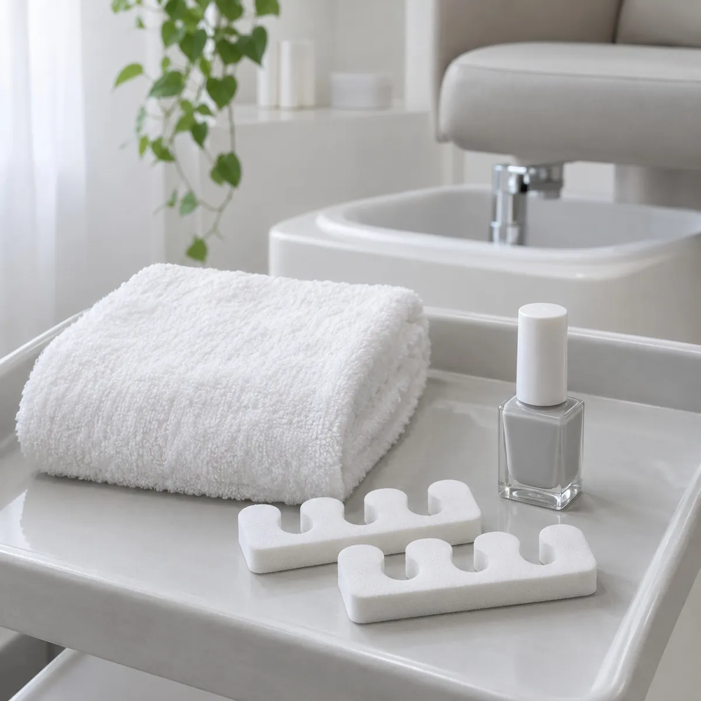
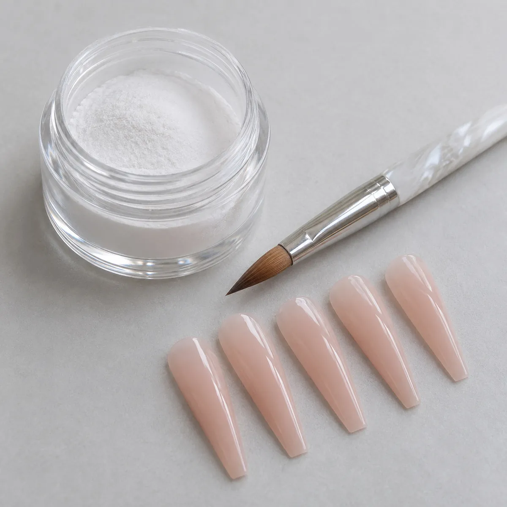

Cuidado de uñas y pies, con turno online
Esculpidas y kapping en acrílico o poligel, soft gel, manicura rusa, pedicura, spa de pies y podosalud. Elegís servicio, día y horario, y listo.


Elegí tu servicio
La duración es aproximada: depende del largo y del diseño que elijas.
Manos
Largo, fuerza o un esmaltado que dure: elegí el trabajo que va con tus uñas.
-
2 h Reservar
Esculpidas en acrílico o poligel
Extensión sobre molde, con la forma y el largo que elijas.
-
1 h 30 min Reservar
Kapping en acrílico o poligel
Una capa sobre tu uña natural para que crezca firme, sin alargarla.
-
1 h 30 min Reservar
Soft gel
Tips de gel que se adhieren a tu uña: largo y forma en menos tiempo.
-
1 h 30 min Reservar
Manicura rusa con semipermanente
Cutículas en seco con torno y fresas finas, y esmaltado semipermanente.
Pies
Pies prolijos y descansados, con el esmaltado que más te guste.


Podosalud para uñas que duelen o cambian de color
Cuando una uña se encarna, se engrosa o cambia de color, no alcanza con esmaltarla. En el turno la miramos, la tratamos y te explicamos cómo seguir en casa.
- Uñas compresivas. Aliviamos la presión de la uña sobre los bordes del dedo.
- Onicomicosis. Limpieza y fresado de la uña afectada, con seguimiento.
- Higiene en cada turno. Instrumental esterilizado y descartables para cada persona.
Ante dolor intenso, infección o diabetes, consultá también con tu médico.
Reservá tu turno desde la web
Ves los horarios libres y lo resolvés en un minuto, sin esperar respuesta.
- 1
Elegís el servicio
Cada uno muestra cuánto dura.
- 2
Marcás día y horario
Solo aparecen los que están libres.
- 3
Te confirmamos por WhatsApp
Con un toque nos avisás que reservaste.

¡Turno reservado!
Tu turno quedó guardado.
Avisar por WhatsAppDemo: en la web publicada, el turno queda guardado en la agenda de Saomi.
Preguntas antes de tu turno
¿Te queda otra duda? Escribinos y te respondemos por WhatsApp.

¿Qué diferencia hay entre esculpidas, kapping y soft gel?
Las esculpidas alargan la uña con acrílico o poligel sobre un molde. El kapping cubre tu uña natural para fortalecerla, sin alargarla. El soft gel usa tips de gel que se adhieren a tu uña: largo rápido y liviano.
¿Acrílico o poligel?
Los dos son resistentes. El poligel es más liviano y flexible; el acrílico, más firme. En el turno vemos cuál le conviene a tus uñas y a tu rutina.
¿Qué es la manicura rusa?
Es una limpieza de cutículas en seco, con torno y fresas finas. El esmaltado queda pegado a la base de la uña y se ve prolijo por más tiempo.
¿Cada cuánto hay que hacer el service?
En esculpidas y kapping, el mantenimiento suele ser cada tres o cuatro semanas, según cómo crezcan tus uñas.
¿Tengo que ir sin esmalte?
Si tenés semipermanente o un trabajo anterior, avisanos al reservar: así calculamos el tiempo del retiro.
¿Atienden uñas encarnadas u hongos?
Sí, en los turnos de podosalud trabajamos uñas compresivas y onicomicosis. Ante dolor intenso, infección o diabetes, consultá también con tu médico.
Tu próximo turno, en un minuto
Elegí servicio, día y horario desde la web, o escribinos si preferís coordinar por WhatsApp.